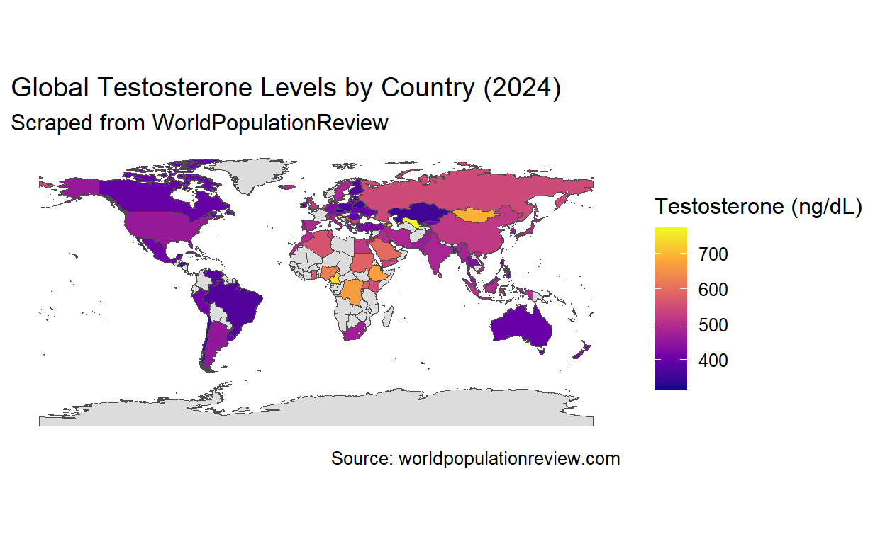
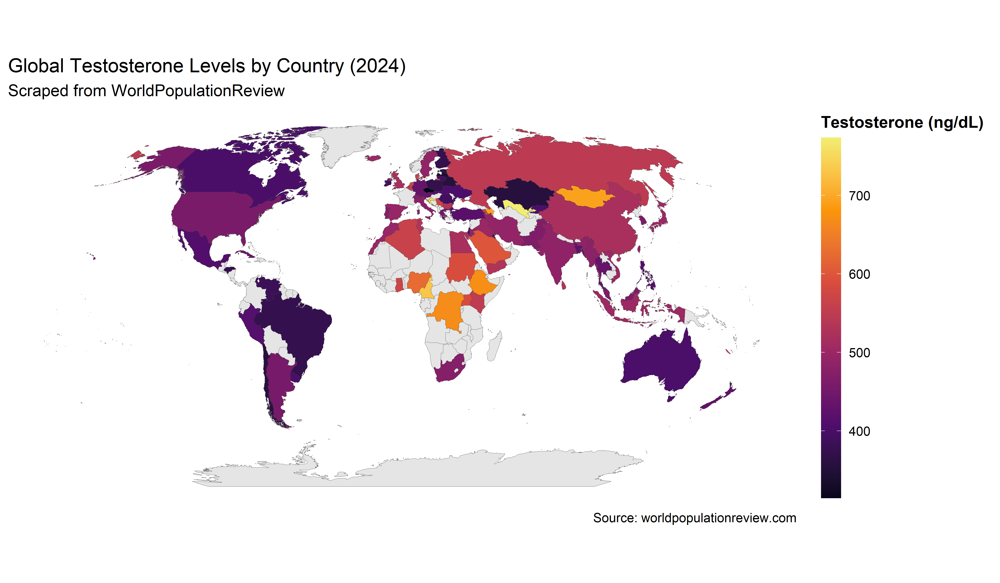

Scrapping global testosterone data from the world population review website and vizualizing it
Recently I stumbled upon the World Population Review ranking of testosterone levels by country and thought it would make a fun data-wrangling and visualization exercise in R. Here’s how I scraped the data, cleaned it, and built a choropleth world map.
Caution — ecological data. Country averages may reflect differing cohorts, lab methods, and sampling times. Values are approximate and not age-standardized. Use for patterns, not precise comparisons or causal inference.
1️⃣ Setup
We’ll need a handful of tidyverse-friendly packages for web scraping, data wrangling, and spatial plotting:
2️⃣ Scrape the data
We try to read a proper HTML table first; if absent, fall back to parsing visible text.
url <- "https://worldpopulationreview.com/country-rankings/testosterone-levels-by-country"
page <- read_html(url)
tbls <- page %>% html_elements("table") %>% html_table(trim = TRUE)
if (length(tbls) > 0) {
raw <- tbls[[1]]
names(raw) <- tolower(names(raw))
# Ensure a 'country' column exists; infer it if necessary
if (!("country" %in% names(raw))) {
cn_idx <- which.max(colSums(sapply(raw, \(x) stringr::str_detect(x, "[A-Za-z]"))))
names(raw)[cn_idx] <- "country"
}
# Pick the column with the most digits as value
val_col <- names(raw)[which.max(colSums(sapply(raw, \(x) stringr::str_detect(x, "\\d"))))]
data_raw <- raw %>% select(country, value = all_of(val_col))
} else {
# Fallback: parse visible text
txt <- page %>% html_element("main") %>% html_text2()
lines <- stringr::str_match_all(txt, "(?m)^([A-Za-z .()'’-]+?)\\s+(\\d{3})\\s+2024$")[[1]]
data_raw <- tibble(country = lines[,2], value = lines[,3])
}3️⃣ Clean and save
We strip non-numeric characters from the value column, de-duplicate countries, and write a CSV.
dat <- data_raw %>%
rename(country = 1, raw_value = 2) %>%
mutate(
country = stringr::str_squish(as.character(country)),
value = as.numeric(gsub("[^0-9.]", "", raw_value))
) %>%
distinct(country, .keep_all = TRUE) %>%
filter(!is.na(value) & value > 0)
# Quick peek
dat %>% slice_head(n = 10)# A tibble: 10 x 3
country raw_value value
<chr> <int> <dbl>
1 Uzbekistan 773 773
2 Croatia 752 752
3 Cameroon 731 731
4 Azerbaijan 694 694
5 Mongolia 693 693
6 Ethiopia 671 671
7 DR Congo 668 668
8 Nigeria 625 625
9 Saudi Arabia 599 599
10 Sudan 588 588Saved: testosterone_wpr_2024.csv4️⃣ Add ISO codes and join to a world map
dat <- dat %>%
mutate(
iso3 = countrycode(country, "country.name", "iso3c",
custom_match = c(
"Czech Republic" = "CZE",
"DR Congo" = "COD",
"Palestine" = "PSE"
))
)
world <- ne_countries(scale = "medium", returnclass = "sf") %>%
st_transform(4326)
world_join <- world %>%
left_join(dat, by = c("iso_a3" = "iso3"))
misses <- dat %>% filter(is.na(iso3)) %>% arrange(country)
if (nrow(misses)) {
cat("Unmatched country names (consider adding to custom_match):\n")
print(misses)
}5️⃣ Plot the choropleth
ggplot(world_join) +
geom_sf(aes(fill = value), color = "grey30", linewidth = 0.1) +
scale_fill_viridis_c(
option = "plasma",
na.value = "gainsboro",
name = "Testosterone (ng/dL)"
) +
labs(
title = "Global Testosterone Levels by Country (2024)",
subtitle = "Scraped from WorldPopulationReview",
caption = "Source: worldpopulationreview.com"
) +
theme_minimal(base_size = 12) +
theme(
legend.position = "right",
panel.grid.major = element_blank(),
panel.grid.minor = element_blank()
)
library(grid) # for unit()
ggplot(world_join) +
geom_sf(aes(fill = value), color = "grey25", linewidth = 0.05) +
# More appealing palette + trimmed extremes
scale_fill_viridis_c(
option = "inferno", begin = 0.05, end = 0.95,
na.value = "grey90", name = "Testosterone (ng/dL)"
) +
# Nicer world projection (Robinson). If this errors on your system, remove this line.
coord_sf(crs = "ESRI:54030") +
labs(
title = "Global Testosterone Levels by Country (2024)",
subtitle = "Scraped from WorldPopulationReview",
caption = "Source: worldpopulationreview.com"
) +
theme_minimal(base_size = 14) +
theme(
plot.title.position = "plot",
legend.position = "right",
legend.key.height = unit(2.2, "cm"),
legend.title = element_text(face = "bold"),
panel.grid.major = element_blank(),
panel.grid.minor = element_blank(),
plot.background = element_rect(fill = "white", colour = NA),
panel.background = element_rect(fill = "white", colour = NA)
)
Interactive plot
You’ll get a vibrant world map shading each country by its reported mean testosterone level. Any unmatched countries are flagged so you can add them to the custom_match list.
This is a nice example of how rvest and ggplot2 can turn an interesting dataset into a ready-to-share visualization in just a few lines of R. Remember that these figures are population averages and can reflect many factors (sampling methods, measurement techniques, etc.), so treat them as exploratory rather than definitive.
# A tibble: 20 x 4
country raw_value value iso3
<chr> <int> <dbl> <chr>
1 Uzbekistan 773 773 UZB
2 Croatia 752 752 HRV
3 Cameroon 731 731 CMR
4 Azerbaijan 694 694 AZE
5 Mongolia 693 693 MNG
6 Ethiopia 671 671 ETH
7 DR Congo 668 668 COD
8 Nigeria 625 625 NGA
9 Saudi Arabia 599 599 SAU
10 Sudan 588 588 SDN
11 Uganda 586 586 UGA
12 Netherlands 571 571 NLD
13 Serbia 570 570 SRB
14 Ghana 569 569 GHA
15 Denmark 566 566 DNK
16 Algeria 563 563 DZA
17 New Caledonia 562 562 NCL
18 Belgium 561 561 BEL
19 Armenia 556 556 ARM
20 Kenya 552 552 KEN What it is. Testosterone (T) is the principal androgen in men, produced mainly by the testes under hypothalamic–pituitary control. Low levels with consistent symptoms define hypogonadism, which should be diagnosed only when both are present and confirmed on at least two morning tests.
Guideline note: diagnose when symptoms/signs are present and serum T is “unequivocally and consistently low.”¹
Country-average T levels are ecologic aggregates. Correlating them with national disease rates (e.g., prostate cancer, CVD, diabetes) risks the ecological fallacy—group-level associations may not reflect individual-level causal effects. Differences in age structure, obesity, assay methods, healthcare access/screening, smoking, and comorbidities can confound cross-country comparisons. Use the map to generate hypotheses, not to claim causation; test hypotheses with individual-level or multilevel data and pre-specified causal models (DAGs).⁶ ⁷
Interpretation note: The country values are ecological, approximate estimates. They combine data from different years, age mixes, labs/methods (e.g., immunoassay vs LC/MS), and time-of-day sampling—so levels aren’t directly comparable or precise. Use the map for broad patterns, not exact rankings or causal claims.
Reproducibility
R version: r R.version.string
Locale/timezone: r paste(Sys.timezone(), format(Sys.time(), ‘%Y-%m-%d %H:%M:%S’))
Packages:
R version 4.1.3 (2022-03-10)
Platform: x86_64-w64-mingw32/x64 (64-bit)
Running under: Windows 10 x64 (build 26100)
Matrix products: default
locale:
[1] LC_COLLATE=English_United Kingdom.1252
[2] LC_CTYPE=English_United Kingdom.1252
[3] LC_MONETARY=English_United Kingdom.1252
[4] LC_NUMERIC=C
[5] LC_TIME=English_United Kingdom.1252
attached base packages:
[1] grid stats graphics grDevices utils datasets
[7] methods base
other attached packages:
[1] plotly_4.10.1 rnaturalearthdata_1.0.0
[3] rnaturalearth_1.1.0 sf_1.0-12
[5] countrycode_1.6.1 rvest_1.0.3
[7] lubridate_1.9.2 forcats_1.0.0
[9] stringr_1.5.0 dplyr_1.1.0
[11] purrr_1.0.1 readr_2.1.2
[13] tidyr_1.3.0 tibble_3.2.0
[15] ggplot2_3.4.1 tidyverse_2.0.0
loaded via a namespace (and not attached):
[1] Rcpp_1.0.10 class_7.3-20 digest_0.6.29
[4] utf8_1.2.2 R6_2.6.1 evaluate_0.20
[7] e1071_1.7-13 highr_0.10 httr_1.4.7
[10] pillar_1.8.1 rlang_1.1.0 lazyeval_0.2.2
[13] curl_5.0.0 data.table_1.14.8 rstudioapi_0.14
[16] jquerylib_0.1.4 rmarkdown_2.20 labeling_0.4.2
[19] selectr_0.4-2 htmlwidgets_1.6.2 bit_4.0.4
[22] munsell_0.5.0 proxy_0.4-27 compiler_4.1.3
[25] xfun_0.37 pkgconfig_2.0.3 htmltools_0.5.4
[28] downlit_0.4.2 tidyselect_1.2.0 viridisLite_0.4.1
[31] fansi_1.0.2 crayon_1.5.2 tzdb_0.3.0
[34] withr_2.5.0 jsonlite_2.0.0 gtable_0.3.2
[37] lifecycle_1.0.3 DBI_1.2.3 magrittr_2.0.4
[40] units_0.8-1 scales_1.2.1 KernSmooth_2.23-20
[43] cli_3.6.0 stringi_1.7.12 vroom_1.5.7
[46] cachem_1.0.6 farver_2.1.1 xml2_1.3.3
[49] bslib_0.4.2 ellipsis_0.3.2 generics_0.1.3
[52] vctrs_0.6.0 distill_1.5.2 tools_4.1.3
[55] bit64_4.0.5 glue_1.6.2 crosstalk_1.2.0
[58] hms_1.1.2 parallel_4.1.3 fastmap_1.1.0
[61] yaml_2.3.5 timechange_0.2.0 colorspace_2.0-3
[64] classInt_0.4-9 memoise_2.0.1 knitr_1.42
[67] sass_0.4.5 If you have enjoyed reading this blog post, consider subscribing for upcoming posts.